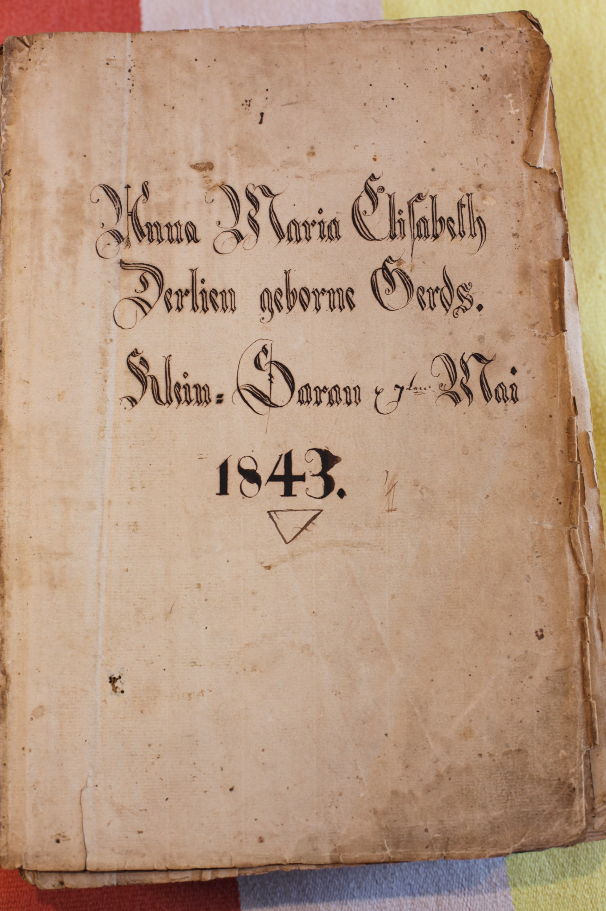
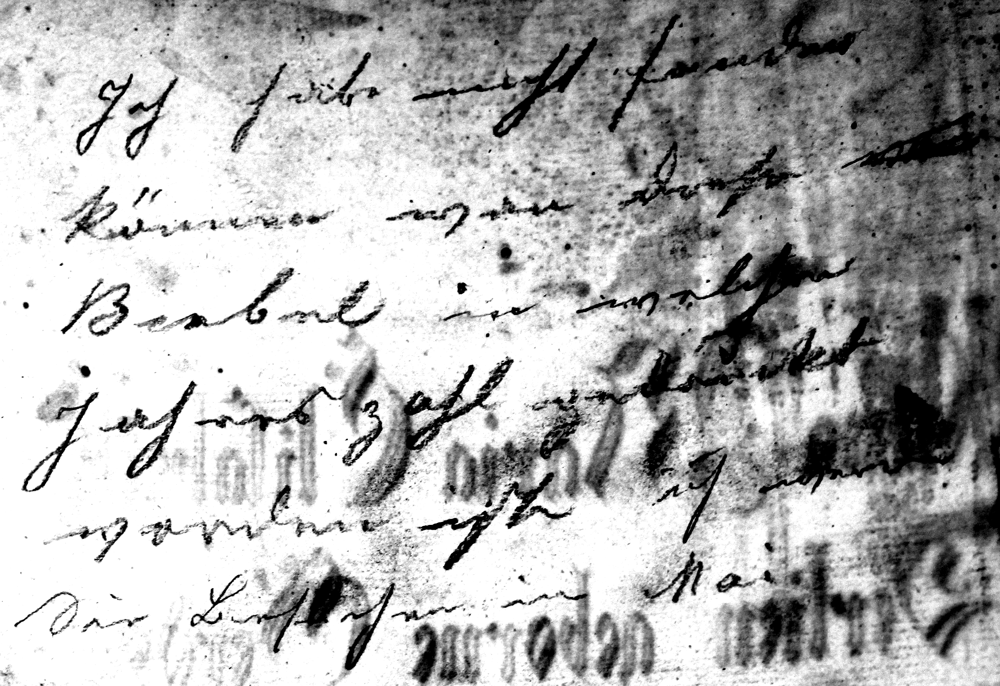

1. The Bible itself
The earlier study identifies the volume with very high confidence as a large-format illustrated German Luther Bible from the celebrated Dilherr-Bibel series published by the Endter house in Nürnberg (Nuremberg). Its pagination and editorial apparatus place it in the older Endter I setting, printed between 1656 and 1706. The exact printing year has not yet been established.
The surviving binding consists of heavy wooden boards covered in leather and shows evidence of lost metal furniture or clasps. The book was not kept as a pristine display object: it was used heavily over generations. That matters because the blank leaves and endpapers have become a family archive in their own right.
2. The 1843 ownership inscription

The calligraphic inscription can now be read much more securely than in the earlier study:
Anna Maria Elisabeth Derlin geborne Gerds. Klein-Sarau d. 7ten Mai 1843.
In modern English:
Anna Maria Elisabeth Derlin, née Gerds.
Klein Sarau, 7 May 1843.
Geborne is an older spelling of modern German geborene, meaning “born [as]” or “née”. The place-name, initially difficult to recognise, is now very likely Klein Sarau in the Herzogtum Lauenburg area of Schleswig-Holstein.
A secondary genealogical database also records Anna Maria Elisabeth Gerds (born 1791) in a Derlin family at Klein Sarau and identifies children of that family there. This is useful corroboration, but it should be treated as a lead rather than a substitute for primary records.
3. Why the location of the wartime note matters
The pencil writing is not on a loose scrap and is not merely an inserted photograph. It is written directly on the reverse of the 1843 family flyleaf. The large “1843” and portions of the ornate calligraphy can be seen showing through backwards on the pencil side.
That establishes a physical sequence:
- The seventeenth-century Bible remained in use as a family object.
- Anna Maria Elisabeth Derlin marked the flyleaf at Klein Sarau on 7 May 1843.
- Decades later, someone in the same book wrote a personal German note connected with aerial warfare over England.
The subject matter is unusual for a Bible, but the location is less surprising than it first appears. Family Bibles commonly accumulated ownership records, births, marriages, deaths, personal notes and other family material on their blank leaves. This Bible was already functioning that way in 1843.
4. The wartime pencil inscription
The pencil is faded, the paper is stained, and the strong 1843 lettering shows through from the other side. Some words are therefore secure and others remain provisional. It is important to distinguish the two.
Conservative line-by-line reading
| Line | German reading | English sense | Confidence |
|---|---|---|---|
| 1 | Ich [grüße?] … Frau u. Kind | “I [send greetings?] … wife and child.” | Medium |
| 2 | Küsschen von deinem [überstrichenen Namen] | “Kisses from your [overwritten name].” | Medium–high |
| 3 | Bomben in England | “Bombs in England.” | High |
| 4 | [Jagd?] … 3 engl. [Maschinen?] | Apparently a pursuit/engagement involving “3 English” aircraft. | Medium |
| 5 | [genommen?] … [Angriff?] … England | Possibly “taken during/at the attack on England”; still too indistinct for a firm literal transcription. | Low |
| 6 | Eine Luftaufnahme … Mai, probably Eine Luftaufnahme vom Mai | “An aerial photograph from May.” | Medium–high |
Provisional fuller reconstruction
A useful working reconstruction — not a diplomatic transcription — is:
Ich grüße [meine/euch?] Frau u. Kind Küsschen von deinem [Name] Bomben in England Jagd nach 3 engl. [Maschinen?] [genommen beim?] Angriff auf England Eine Luftaufnahme vom Mai
A corresponding English rendering would be:
“I send greetings to [my/you?] wife and child.
Kisses from your [name].
Bombs in England.
Pursuit of / engagement with three English [aircraft?].
[Taken during?] the attack on England.
An aerial photograph from May.”
The last four lines may be better understood as captions or notes relating to photographs rather than as a single continuous sentence. The explicit word Luftaufnahme (“aerial photograph”) strongly suggests that photographs or aerial reconnaissance/bombing images were part of the original context, even if those images are no longer with the page.

5. The overwritten name
The word at the right of the personal greeting/sign-off has been heavily overwritten or crossed through, but surviving strokes remain visible. Repeated enlargement, contrast work and comparison of the letter forms produced the following shortlist:
- Walther — currently the strongest candidate.
- Walter — almost equally plausible; the difference depends on whether one tall stroke belongs to the original name or to the overwriting.
- Wilhelm — possible, especially if the ending has been misread.
- Willi — possible but weaker; the visible word appears somewhat too long.
The initial seems more likely to be a W than M, H or F. This remains one of the least certain parts of the inscription, and no specific historical airman should be identified from it yet.
6. Why the inscription is wartime
The phrase “Bomben in England”, combined with an apparent reference to English aircraft and an aerial photograph, places the note in the age of German aerial warfare against Britain. In historical terms, the realistic contexts are the First World War and the Second World War.
German air attacks on England began in the First World War with Zeppelin raids in 1915. Fixed-wing German bombing became especially significant in 1917. Historic England records that on 25 May 1917 the Germans launched a mass raid on south-east England with 23 Gotha heavy bombers. The RAF Museum likewise describes 25 May as the first large-scale German daylight raid on Britain.
In the Second World War the Luftwaffe bombed Britain on a vastly greater scale, particularly during the Blitz beginning in 1940. Therefore Bomben in England by itself cannot distinguish WWI from WWII.
7. Why the First World War is currently favoured
The WWI interpretation rests on several clues taken together, rather than on one decisive word:
- The handwriting. It looks more like older German Kurrent or a Kurrent-influenced personal hand than the more upright Sütterlin taught widely between the wars. This is supportive, not decisive: older writers continued using Kurrent long after newer scripts were introduced.
- The month of May. The apparent phrase “Luftaufnahme vom Mai” is particularly suggestive because the large-scale Gotha campaign against Britain began on 25 May 1917.
- The operational language. “Bombs in England”, an apparent engagement with three English aircraft, and an aerial photograph read naturally as notes connected with an air operation.
- The personal sign-off. The greeting to wife/child and “Küsschen von deinem …” makes the material feel personal rather than like a detached newspaper quotation.
On 25 May 1917, 23 Gothas were dispatched for London. Bad weather forced the formation onto targets in Kent, including Folkestone and Shorncliffe. The RAF Museum records that British aircraft were scrambled and that the returning Gothas were also engaged near the Belgian coast. That historical setting is strikingly compatible with the surviving phrases, although there is not enough evidence to identify a particular raid.
8. What this means for the Bible's journey to South Africa
For this reconstruction, the following family-history premises are being accepted as supplied:
- The Bible remained in the possession of the same German-speaking family over many generations.
- Once it went to South Africa, it did not return to Europe.
- The present owner’s family tradition is therefore one of continuous inherited possession rather than later antiquarian purchase.
Under those premises, the wartime inscription materially changes the provenance story. A previous assumption that the Bible had permanently left Europe for South Africa before 1914 becomes difficult to reconcile with a personal, apparently first-hand German aviation note written directly into the Bible.
There is one logical qualification. The words alone do not prove the geographical location of the Bible at the moment the pencil touched the paper: in principle, someone in South Africa could have received photographs or correspondence from Europe and annotated the Bible there. However, the personal sign-off, the caption-like operational wording, the overwritten name, and the continuous German family context make a European wartime origin the simpler explanation.
Best provenance conclusion at present: the Bible was still in Europe — or at least still directly embedded in the family’s European wartime experience — during the First World War if the WWI reading is correct. If there was genuinely no return journey from South Africa, the traditional idea of a permanent pre-WWI migration should be treated as doubtful and the final move to South Africa should be sought after the wartime inscription.
9. A reconstructed chronology
| Date | Evidence / event | Status |
|---|---|---|
| 1656–1706 | Dilherr/Endter Luther Bible printed in Nuremberg in the older Endter I series. | High confidence |
| 7 May 1843 | Flyleaf inscribed: Anna Maria Elisabeth Derlin, née Gerds, Klein Sarau. | Very high confidence |
| 1841–1843 | Archival case names widowed full-farm holder Anna Maria Elisabeth Derlin née Geertz of Klein Sarau. | Independent institutional record; likely the same woman |
| 1915 onward | German aerial bombing of England during WWI begins with airships. | Historical fact |
| 25 May 1917 | First large-scale German daylight Gotha raid on Britain; major fixed-wing England campaign begins. | Historical fact |
| c. 1917–18? | Probable date of the pencil aviation inscription. | Strong working hypothesis |
| Later | Bible ultimately travels to South Africa and remains in the family. | Family-history fact; exact date still to establish |
10. The most important new discovery: the Derlin/Klein Sarau link
The archival match means the 1843 page is no longer just an anonymous old family inscription. It can probably be attached to a real person and place. The Landesarchiv catalogue describes Anna Maria Elisabeth Derlin as a widow and Vollhufnerin (a holder of a full farm holding) involved in litigation with the Amt Ratzeburg over dispossession between 1841 and 1843.
This provides a promising route forward: instead of searching blindly through German aircrew lists, the family can be traced forward from Anna Maria Elisabeth Derlin and Klein Sarau. If a descendant or close family member named Walter, Walther, Wilhelm or a similar W-name appears at military age in 1914–18, the overwritten signature can then be tested against a real family candidate.
11. What is established, and what is not
| Finding | Assessment |
|---|---|
| The Bible is a German Dilherr/Endter Luther Bible, older Endter I series. | Very strong |
| The flyleaf says Anna Maria Elisabeth Derlin, née Gerds, Klein Sarau, 7 May 1843. | Very strong |
| The archival Anna Maria Elisabeth Derlin née Geertz of Klein Sarau is the same woman. | Highly likely, but primary record comparison would make it definitive. |
| The pencil note says “Bomben in England”. | Strong |
| It refers to three English aircraft. | Probable |
| It refers to an aerial photograph from May. | Probable to strong |
| The overwritten name is Walther or Walter. | Plausible, not proven |
| The inscription is connected with wartime German aerial operations against England. | Very strong |
| It dates specifically to WWI. | Favoured interpretation, not absolute proof. |
| It is specifically the May 1917 Gotha raid. | Interesting hypothesis only. |
| The Bible physically remained in Europe until the war. | Likely under the family-history premises and first-hand interpretation, but location is not stated explicitly in the note. |
12. Best next research steps
- Trace the Derlin family forward from Klein Sarau. Use church books, civil registers and the Lauenburg archival records to build the descendants of Anna Maria Elisabeth Derlin.
- Obtain the 1841–1843 court file. The archival references include
LASH, Abt. 216 Nr. 248and a related Arcinsys entryAbt. 217 Nr. 76. These may contain family relationships, property details or signatures. - Look for W-names in the WWI generation. Walter, Walther and Wilhelm should be prioritised, but the handwriting should lead the genealogy rather than the other way around.
- Only then search military aviation records. A family candidate with a full name, birth date and place would make military identification much more realistic.
- When physical access is possible again, photograph the note under raking light from several directions. High-resolution RAW images, and ideally professional infrared/UV or multispectral imaging, may separate the overwritten signature from the underlying writing.
- Do not erase, clean, trace or chemically treat the pencil. The faint note is now significant provenance evidence.
13. Sources and research status
- Primary evidence: photographs of the Bible and both sides of the 1843/wartime flyleaf supplied by the family.
- Earlier bibliographical study: the family’s previous research report identifying the Dilherr/Endter Bible, hosted at lucasforde.co.uk/german-bible/.
- Deutsche Digitale Bibliothek / Landesarchiv Schleswig-Holstein: 1841–1843 case of Anna Maria Elisabeth Derlin née Geertz of Klein Sarau.
- Historic England: First World War: The First Blitz.
- RAF Museum: British military aviation timeline — 1917 and The Few and the First Battle of Britain.
- Handwriting context: Transkribus overview of Kurrent and Sütterlin. Handwriting style is used only as supporting evidence, not as a standalone date.
- Secondary genealogical lead: Genealogie Online records for the Derlin/Gerds family in Klein Sarau. These should be checked against original Lutheran registers before being treated as proven genealogy.
Interpretive caution: This document deliberately separates secure readings from reconstructions. Old German handwriting, faded pencil and show-through from the 1843 inscription create a real risk of seeing plausible words that are not actually present. The phrases “Bomben in England” and “Luftaufnahme … Mai” are the key anchors; the name, line 4 and line 5 remain the main unresolved areas.